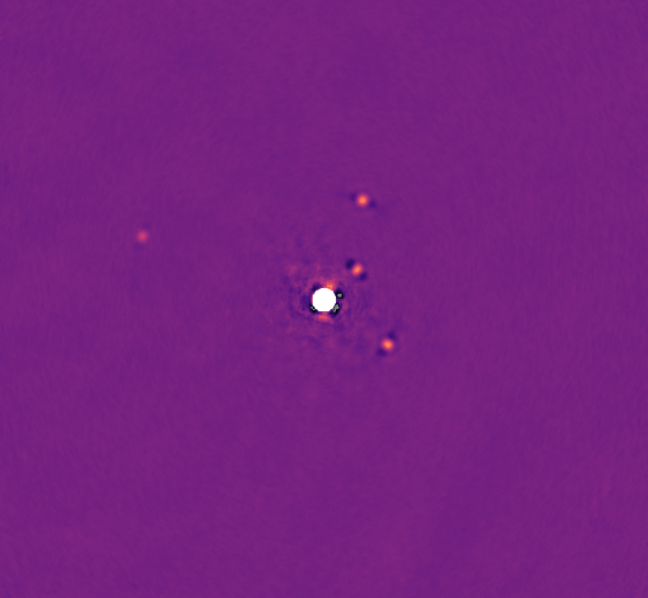

Observational Work
One of my largest observational projects to date has been the Deep orbital Search for Additoinal Planets in the HR8799 system (Thompson et al, 2022). The image below combines four quarter-nights of Keck NIRC2 data to display the four known planets in the HR8799 system (Marois et al, 2010).
These four planets are the first directly imaged planetary massed objects outside our solar system, and have been extensively studied.
My work on this system included observering and gathering 16 nights of NIRC2 observations, developing new ADI post-processing techniques (Thompson & Marois, 2021) and developing new orbit modelling techniques to search for faint companions in the presence of orbital motion.
This project led to the detection of a candidate fifth inner planet: a possible explanation for proper motion measurements that are in tension with atmosphere models.
I also used data from this project to create the first 100% uniformly reduced orbital animation of the system, see here:
This animation uses a keplerian motion interpolation scheme to smoothly move between images.
Currently observational work includes:
- Efforts to directly lower mass and cooler companions around nearby stars, both at thermal wavelengths from the ground and from space.
- Various observational programs with VLTI-GRAVITY
- Orbits of Moving Group Binaries with Eric Nielsen
- The Subaru/Keck accelerating stars program with Thayne Currie
Instrumentation
I am currently involved in three major instrumentation projects, including SPIDERS (the Subaru Pathfinder Instrument for Detecting Exoplanets and Retrieving Spectra), the Gemini Planet Imager 2.0 / CAL2 upgrade, and NRC's optical aperture synthesis project.
Focal Plane Wavefront Sensing
Focal plane wavefront sensing refers to any technique that measures the electric field of light at the science focal plane. This kind of approach is critically important for the next generation of direct imaging instruments, because it allows us to measure and suppress stellar glare, also known as "speckles".
In SPIDERS, we will demonstrate the Fast Atmospheric Self-Coherent Camera Technique (Gerard et al 2019). With the FAST SCC, we turn the science camera into a interferometer. Instead of blocking starlight using a coronagraph, we redict it, filter it, and interfer it back with itself.
The upshot is that our science images become fringed anywhere light leaks past the coronagraph. Planets and disks, being incoherent with the star, remain unfringed, allowing us to instantly discriminate between planet light and starlight.
Using a deformable mirror and techniques from adaptive optics, we can use this information to perform an active correction and create a region around the star where the starlight has been dramatically suppressed—a.k.a. "digging a dark hole":

Coherent Differential Imaging
In addition to active correction, we can use the self-coherent camera to post-process our data and reveal even fainter planets. This software step can be combined with the hardware loop described above to further suppress stubborn speckles.

Fourier Transform Spectroscopy
Using spectral information to help discriminate planet light from starlight has a long history. Unfortunately, it has often not lived up to its expectations. Real data from instruments like GPI, SPHERE, and SCExAO reveals that low-resolution integral field units give datacubes with speckles that evolve considerably with wavelength.
To better understand chromaticity in high contrast instruments, to try and improve on current performance, and to combine spectroscopy with self-coherent camera, I proposed and helped to build an Imaging Fourier Transform Spectrograph (IFTS) for the SPIDERS instrument.
The SPIDERS IFTS will be capable of imaging exoplanets with a spectral resolution of over R15,000. Preliminary results show a factor of 40-50 starlight suppression may be possible using spectral differential imaging with this instrument. A collapsed cube is visible in the image below:

Optical Apperture Synthesis
Modelling
A major focus of my research is detecting planets by combining orbit modelling with models of raw data. A classic example of this is radial velocity: a time series of RV measurements from a given star only reveals its secrets—knowledge of any orbitting planets—once an orbit model has been fit. This also applies to transit data, astrometric motion etc.
In the past, direct methods like exoplanet imaging and high resolution have been treated like separate, independent measurements, each with the possibility to confirm/reject the existence of a planet. This is now changing.
As we probe closer to stars and search for much fainter planets, orbital motion becomes a significant factor. For many observations, orbital motion of the planet now sets the practical upper limit on integration time (and thus planet sensitivity). In order to stack our measurements over indefinite timescales, the raw data must be treated within an orbit model.
Orbit Modelling
Direct Image Modelling / "De-orbitting"
Interferometry
Proper Motion / Absolute Astrometry
Software
Octofitter.jl
PlanetOrbits.jl
PairPlots.jl
JuliaAstro
AstroImages.jl
üêô